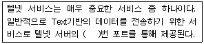
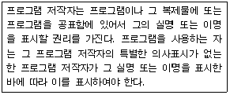
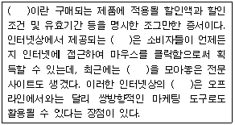
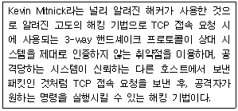

전자상거래운용사 (2008-08-30 기출문제)
1과목: 인터넷 일반
1. 다음 중 HR 태그를 사용할 때 적용되지 않는 속성은?
- SIZE
- WIDTH
- COLOR
- BORDER
(정답률: 알수없음)

2. 분야별로 공통의 관심사를 가진 인터넷 사용자들이 서로의 의견을 주고받을 수 있게 해주는 인터넷 서비스를 일컫는 말은?
- WWW
- WAIS
- USENET
- IRC
(정답률: 알수없음)
3. 채팅 서비스(IRC : Internet Relay Chat) 사용상의 네티켓(Netiquette)에 대한 다음 설명들 중 가장 올바르지 않은 것은?
- 대화방에 처음 들어가면 잠시 동안 경청하여 분위기를 파악한다.
- 의사소통을 위해 어떤 단어를 쓰기 전에 한번 더 생각하는 자세가 필요하다.
- 대화의 주제에 부합하여 이야기하며, 함부로 대화의 주제를 바꾸어서는 안된다.
- Smile Faces 문자나 약자, 속어 등을 많이 사용하여 재미있게 유도한다.
(정답률: 알수없음)
4. 클라이언트의 브라우저에서 GET 방식으로 id라는 변수로 데이터를 전송하였다. 다음 중 서버측에서 전송된 데이터에 접근하기 위한 ASP 문장으로 옳은 것은?
- Request.Form("id")
- Request.QueryString("id")
- Response.Form("id")
- Response.QueryString("id")
(정답률: 알수없음)
5. 다음의 검색사이트 중 국내에서 개발된 것은 무엇인가?
- 야후(Yahoo)
- 라이코스(Lycos)
- 네이버(Naver)
- 알타비스타(Altavista)
(정답률: 알수없음)
6. 다음 설명 중 괄호 안에 들어갈 포트번호로 옳은 것은?

- 21
- 23
- 25
- 100
(정답률: 알수없음)
7. 다음의 도메인 네임과 관련된 설명 중 가장 바르지 못한 것은?
- 도메인 네임이란 영문, 숫자, 하이폰(-)으로 표현된 인터넷 주소이다.
- 도메인 네임 시스템 또는 서버는 IP주소와 도메인 네임 사이의 변환 작업 시스템이다.
- 도메인 네임 서버에 장애가 발생하면 인터넷의 사용에 불편함이 발생한다.
- 일반적으로 업종에 따른 도메인 이름은 미국과 한국이 완전히 같다.
(정답률: 알수없음)
8. 다음 HTML 태그 중 글자의 크기 및 성질을 제어하지 않는 것은?
- ＜B＞
- ＜H1＞
- ＜HR＞
- ＜FONT＞
(정답률: 알수없음)
9. 다음 중 웹디자인의 구성요소와 가장 거리가 먼 것은?
- 다양성
- 명료성
- 정확성
- 신속성
(정답률: 알수없음)
10. 다음 자바스크립트에 대한 설명 중 가장 거리가 먼 것은?
- 웹브라우저 내에서 동적인 인터페이스 서비스를 작성하기 위해 사용된다.
- 클라이언트에서 실행되며 해석된다.
- 클래스와 상속 등 완전한 객체지향 구문을 지원한다.
- 변수의 자료형이 필요없다.
(정답률: 알수없음)
11. 다음 HTML 태그 중 문자의 표현에 관한 태그의 설명이 틀린 것은?
- 머리글자(Headings) 태그 ＜Hn＞...＜/Hn＞에서 n의 값이 커질수록 글자의 크기는 작아진다.
- FONT 태그 ＜FONT size = "n"＞에서 n의 값은 1에서 6사이의 정수이다.
- FONT 태그 ＜FONT size = "n"＞에서 n의 값이 커질수록 글자는 커진다.
- FONT 태그에서는 ＜FONT size=4 face="굴림“＞과 같이 속성을 조합하여 사용할 수 있다.
(정답률: 알수없음)
12. 다음 중 정보 검색에 대해 올바르게 설명한 것은?
- 인터넷에서 다양한 정보를 얻기 위해 일반적으로 검색엔진을 사용한다.
- 검색엔진은 정보를 보호하기 위해 허가를 받은 사이트만 기능을 제공할 수 있다.
- Archie나 gopher 같은 서비스에서 정보를 검색하는 것은 불가능하다.
- 모든 검색엔진은 정보를 검색하기 위해 검색단어를 반드시 입력해야 한다.
(정답률: 알수없음)
13. 다음에서 설명하고 있는 것은 컴퓨터프로그램보호법 중 무엇에 해당하는가?

- 발행권
- 공표권
- 성명표시권
- 동일성 유지권
(정답률: 알수없음)
14. 데이터베이스(DB)란 많은 자료를 정리하여 관련이 있는 자료를 공용할 수 있도록 구조적으로 통합, 저장한 데이터의 집합체를 말한다. 이러한 DB를 체계적으로 관리하기 위한 소프트웨어를 통칭하여 무엇이라고 하는가?
- DB
- DBA
- DBMS
- SQL
(정답률: 알수없음)
15. 다음은 ASP, PHP, JSP 언어에 대한 설명이다. 틀린 것은?
- PHP와 JSP는 무료로 사용이 가능하다.
- JSP는 자바 기반의 웹 프로그래밍 언어이다.
- ASP는 VBScript와 JScript 언어로 작성이 가능하다.
- 오직 리눅스(LINUX)계열 OS에서만 사용이 가능하다.
(정답률: 알수없음)
16. 다음 중 웹브라우저가 아닌 것은?
- 링스(Lynx)
- 파이어폭스(Firefox)
- 인터넷 익스플로러(Internet Explorer)
- 아키(Archie)
(정답률: 알수없음)
17. 다음 서블릿(Servlet)과 JSP(JavaServer Page)에 대한 설명들 중 틀린 것은?
- 서블릿은 자바 언어를 이용하여 작성된 프로그램으로 서버에서 실행된다.
- 서블릿과 JSP 페이지 모두 JDBC(Java Database Connectivity)와 연동이 가능하다.
- 서블릿은 기존의 CGI 프로그램과 같이 요청이 있을 때마다 프로세스를 생성하여 처리한다.
- JSP 페이지는 서버 내부적으로는 서블릿으로 변환되어 사용된다.
(정답률: 알수없음)
18. 다음 중 컴퓨터프로그램보호법에서 사용되는 용어들에 대한 정의로 올바르지 않은 것은?
- 프로그램 : 특정한 결과를 얻기 위하여 컴퓨터 등 정보처리능력을 가진 장치 내에서 직접 또는 간접으로 사용되는 일련의 지시ㆍ명령으로 표현된 것을 말한다.
- 개작 : 본래의 프로그램과 상관 없이 완전히 다시 제작하는 것을 말한다.
- 공표 : 프로그램을 발행하거나 이를 특정인 또는 불특정 다수인에게 제시하는 것을 말한다.
- 배포 : 원 프로그램 또는 그 복제물을 공중에게 양도 또는 대여하는 것을 말한다.
(정답률: 알수없음)
19. HTML로 폼(form)을 작성 시 2줄 이상의 텍스트 입력을 하기위해서 사용되는 태그 명칭은?
- ＜TEXTBOX＞
- ＜MLINEBOX＞
- ＜TEXTAREA＞
- ＜MULTILINE＞
(정답률: 알수없음)
20. 다음 중 ASP에서 제공하는 기본 객체에 대한 설명이 잘못된 것은?
- 다른 URL로 점프하기 위해서는 Response.Redirect 함수를 사용한다.
- 클라이언트에 문자열을 전송하려면 Response.Write 함수를 사용한다.
- 요청이 들어온 클라이언트 컴퓨터의 IP 주소를 알려면 Request 객체를 사용한다.
- 데이터베이스와 연동하는 객체를 생성하기 위해서는 Application 객체를 사용한다.
(정답률: 알수없음)
2과목: 전자상거래 일반
21. 다음 중 바람직한 웹 사이트 프로모션 방법으로 가장 적절하지 않은 것은?
- OFF-Line상에서의 웹사이트 홍보
- 배너광고
- 대량 스팸 메일 발송
- 포털 사이트나 검색엔진에 자사의 사이트 주소 등록
(정답률: 알수없음)
22. 물리적 상품의 판매에 있어서 전자상거래 방식과 전통적 상거래 방식의 차이점으로 가장 거리가 먼 것은?
- 제품 주문 방식
- 대금 결제 방식
- 제품 배송 방식
- 제품 정보 탐색 방식
(정답률: 알수없음)
23. 다음은 인터넷 판매촉진도구에 대한 설명이다. 괄호에 알맞은 판매촉진도구는?

- 추첨과 경연
- 보너스팩
- 쿠폰
- 샘플링
(정답률: 알수없음)
24. 고객 관리를 위해 수행하는 텔레마케팅은 크게 인바운드 텔레마케팅(Inbound Telemarketing)과 아웃바운드 텔레마케팅(Outbound Telemarketing)으로 구분할 수 있다. 다음 중 인바운드 텔레마케팅의 활용 분야로 보기 어려운 것은?
- 시장 조사
- 주문 처리
- 고객 불만사항 접수
- 자료 청구 접수
(정답률: 알수없음)
25. 다음 물류산업의 패러다임 변화를 나타내고 있는것 중 가장 적절하지 않은 것은?
- 다품종 소량 물류 → 소품종 대량 물류
- 종이 문서(paper) 기반 물류 → 인터넷 기반 물류
- 보관 물류 → 무재고 물류
- 공급자 중심 물류 → 고객 중심의 맞춤 물류
(정답률: 알수없음)
26. 다음 중 인터넷을 이용한 전자상거래의 특징으로 볼 수 없는 것은?
- 개개인에 적합한 맞춤형 상품을 제공하는 맞춤형 서비스
- 동일한 제품과 서비스의 대량 생산(Mass production) 지향
- 게시판 등을 통한 기업과 고객 간의 양방향 의사소통
- 고객들 간의 의사소통이 가능한 가상 공동체(Community) 형성
(정답률: 알수없음)
27. 다음 중 제3자 물류회사를 이용하는 경우 얻을 수 있는 이점으로 가장 적절한 것은?
- 물류활동에 대한 운영효율의 저하
- 고객과의 직접 면담을 통한 고충처리 가능
- 인적 비용 및 자본 비용 절감
- 물류시설 확대를 통한 자산증가
(정답률: 알수없음)
28. 다음 전자화폐가 갖추어야 할 성격 중 가장 거리가 먼 것은?
- 이중사용불가능성
- 양도가능성
- 추적가능성
- 복제불가능성
(정답률: 알수없음)
29. 다음 중 가상시장(e-marketplace)의 유형으로 볼 수 없는 것은?
- 카탈로그형
- 경매형
- 정보제공형
- 역경매형
(정답률: 알수없음)
30. 인터넷 소비자는 구매의사 결정에 있어서 여러 가지 위험을 느낀다. 다음 중 소비자가 생각하는 위험을 감소시키는 전략으로 가장 적절하지 못한 것은?
- 다른 사이트에 비해 저렴한 상품 가격 제공
- 소비자들끼리 의견을 교환할 수 있는 장의 마련
- 인터넷을 통한 구매 전에 사용 기회의 마련
- 수, 배송과정을 한 눈에 알아볼 수 있도록 상품 추적 시스템 도입
(정답률: 알수없음)
31. 다음 중 인터넷마케팅에 대한 설명으로 가장 거리가 먼 것은?
- 인터넷이라는 가상공간을 활용하여 마케팅 활동을 한다.
- 인터넷 시대에 맞추어 시장점유율 상승을 목적으로 하는 마케팅 수단이다.
- 마케팅 목적에 적합한 컨텐츠(contents)의 개발과 웹을 이용한 프로모션(promotion) 등 효과적인 마케팅을 수행하기 위해 기술적인 지원이 필요하다.
- 인터넷 마케팅이 활성화되기 위해서는 인터넷을 이용하는 소비자들의 특성과 매체의 특성이 잘 반영될 수 있는 인터넷 환경 분석이 이루어져야 한다.
(정답률: 알수없음)
32. 다음 중 전자상거래에 대한 설명으로 올바른 것은?
- 보통의 경우 전통적인 상거래보다 더 짧은 유통경로를 갖는다.
- 고객을 직접 만날 수 없기 때문에 전통적인 상거래보다 고객 수요 파악이 어렵다.
- 홈페이지 구축 등으로 인해 일반적인 경우 전통적인 상거래의 경우보다 더 많은 자본을 필요로 한다.
- 거래의 장소와 시간에 많은 제약을 갖는다.
(정답률: 알수없음)
33. 다음 중 전자상거래에서 소비자의 신뢰를 구축하는 방법으로 가장 거리가 먼 것은?
- 공인된 보안 인증기관을 통한 결제
- 신뢰를 주는 브랜드 구축
- 구매자의 편의성 제공
- 사이트를 운영하는 회사의 주가 관리
(정답률: 알수없음)
34. 다음 중 인터넷이 유통산업 및 유통방식에 미치는 영향에 대한 설명으로 가장 적절하지 않은 것은?
- 생산자와 소비자를 연결하여 주는 중간상이 배제된다.
- 유통시장의 규모를 축소시킨다.
- 인터넷 브로커 등 새로운 중간상이 등장하게 된다.
- 온라인과 오프라인 유통채널간 갈등이 커지게 된다.
(정답률: 알수없음)
35. 다음 중 B2C 온라인 쇼핑몰로 인한 소비자의 구매과정의 특징으로 옳지 않은 것은?
- 구매시간, 장소에 대한 제약이 없어짐
- 개인 정보의 유출에 대한 우려 가중
- 상품검색능력 제고
- 유통단계의 증가
(정답률: 알수없음)
36. 포털(Portal) 사이트에 대한 아래의 설명 중 올바르지 않은 것은?
- 포털은 더 많은 회원 확보에 노력하고 있으며, 오랫동안 고객들이 머무를 수 있도록 다양한 콘텐츠를 제공하기도 한다.
- 포털 사이트의 성공을 위해서는 메일 서비스, 정보 검색 서비스 등 다양한 콘텐츠의 체계적 정리가 필요하다.
- 포털 사이트의 수입원은 상품 판매 수수료가 제일 큰 비중을 차지하고 있다.
- 포털은 인터넷으로 들어가기 위해 거쳐야 하는 관문의 의미를 담고 있다.
(정답률: 알수없음)
37. 다음 중 인터넷 가격결정방법에 대한 설명이 틀린 것은?
- 주문기준 가격결정은 공급자가 가격을 책정하는 것이 아니라 고객이 가격을 결정하게 되는 방식이다.
- 사용기준 가격결정이란 고객이 혜택을 받은 만큼 그에 상응하는 반대급부를 내도록 책정하는 것이다.
- 공동구매는 구매에 참여하는 구매자의 수에 따라 구매물량이 확대되는 대신 공급가격을 저렴하게 하는 방식이다.
- 역경매에서는 판매자가 제시한 제품사양에 대해 구매자가 경쟁적으로 입찰을 한다.
(정답률: 알수없음)
38. 다음 중 기업 대 소비자간 전자상거래(B2C)로 보기 어려운 것은?
- 인터넷 뱅킹
- 온라인 광고
- 공급사슬관리
- 온라인 게임
(정답률: 알수없음)
39. 다음 중 소비자 물리적 상품 구매 프로세스가 올바르게 연결된 것은?
- 인터넷 접속 → 상품검색 → 회원등록 및 인증 → 주문처리 → 장바구니 처리
- 인터넷 접속 → 상품검색 → 주문처리 → 장바구니 처리 → 회원등록 및 인증
- 인터넷 접속 → 주문처리 → 상품검색 → 회원등록 및 인증 → 장바구니 처리
- 인터넷 접속 → 상품검색 → 주문처리 → 회원등록 및 인증 → 장바구니 처리
(정답률: 알수없음)
40. 다음 중 주문 절차에 대한 설명으로 가장 거리가 먼 것은?
- 일반적으로 쇼핑몰 입장에서의 주문 절차는 주문 접수, 주문 처리, 주문 완료의 단계로 구성된다.
- 주문 접수 단계에서는 고객과 상품에 대한 정보, 지불에 대한 정보, 그리고 배송에 대한 정보를 고객으로부터 입력받는다.
- 도용의 방지를 위하여 배송 장소는 별도의 입력이나 변경 없이 고객의 주소를 그대로 사용한다.
- 주문 처리 단계에서는 재고를 확인하고, 지불정보의 유효성을 검토한다.
(정답률: 알수없음)
3과목: 컴퓨터 및 통신 일반
41. 운영체제와 관련된 다음의 설명 중 올바른 것은?
- Windows운영체제는 GUI를 사용한 최초의 운영체제다.
- Windows에서 시스템 콜을 수행하기 위한 수단으로 DLL파일을 사용한다.
- 모든 어플리케이션 프로그램은 운영체제의 종류와 관계없이 설치되어 수행된다.
- 모든 운영체제의 프로그램의 소스는 공개되어 있다.
(정답률: 알수없음)
42. 클라이언트-서버 모델에 대한 다음의 설명 중 옳지 않은 것은?
- 클라이언트-서버 모델은 실제 작업이 클라이언트에서 일어나고 서버에서 다수의 클라이언트는 하나의 서버에 동시에 접속할 수 있다.
- 다수의 클라이언트는 하나의 서버에 동시에 접속할 수 있다.
- 하나의 서버는 다수의 클라이언트를 동시에 관리할 수 있다.
- 다수의 클라이언트는 다수의 서버를 관리할 수 있다.
(정답률: 알수없음)
43. 웹(Web) 상에서 좀 더 편리하게 웹 페이지를 구축하기 위해 APM이라는 신조어가 등장하게 되었다. 다음 중 APM을 이루는 패키지로 옳게 짝지어진 것은?
- Apache - PHP - MySQL
- Apache - Perl - mSQL
- Apache - Perl - MySQL
- Apache - PHP - mSQL
(정답률: 알수없음)
44. 다음 중 인터넷 프로토콜 MIME(Multipurpose Internet Mail Extensions)에 정의된 최상위(top-level) Content-Type이 아닌 것은?
- text
- image
- audio
- jpeg
(정답률: 알수없음)
45. 다음 중 전자우편, 쇼핑, 커뮤니티, 홈페이지 공간, 인터넷 접속 등을 하나의 사이트에서 종합적으로 제공하는 것을 일컫는 말은?
- 허브 사이트
- 보털 사이트
- 토탈 사이트
- 포털 사이트
(정답률: 알수없음)
46. 다음 중 인터넷에 대한 설명으로 틀린 것은?
- 인터넷은 네트워크상의 사용자들이 접속되어 있는 전세계를 연결하는 컴퓨터 통신망이다.
- 네트워크를 통하여 접근할 수 있는 모든 자원 또는 정보의 교환은 HTTP 프로토콜을 이용한다.
- 인터넷상의 모든 호스트 컴퓨터는 고유한 IP를 가진다.
- 인터넷은 1969년 미국 국방부가 군사용으로 구축한 ARPANet에서 시작되었다.
(정답률: 알수없음)
47. 다음 중 IEEE 802 표준안에서 사용되는 이더넷(Ethernet) 종류에 대한 설명 중 옳지 않은 것은?
- 10Base5 : 전송속도 10Mbps, 리피터 없이 사용되는 최대사용거리 500m
- 10BaseT : 전송속도 10Mbps, 동축케이블 사용
- 100BaseFX : 전송속도 100Mbps, 광케이블 사용
- 100BaseTX : 전송속도 100Mbps, 리피터 없이 사용되는 최대전송거리 100m
(정답률: 알수없음)
48. 다음에서 설명하는 해킹기법은 무엇인가?

- Smurf 공격
- DDoS
- IP Spoofing
- Land 공격
(정답률: 알수없음)
49. 다음 중 인터넷 정보검색에서 검색엔진을 구성하는 요소와 가장 거리가 먼 것은?
- 색인 데이터베이스(index database)
- 웹 로봇(web robot)
- 질의 서버(query server)
- 인증 서버(Authentication server)
(정답률: 알수없음)
50. 다음 중 바이러스 종류와 설명이 잘못된 것은?
- 부트(boot) 바이러스 : MS-DOS에서 디스크의 첫 부분 부트트랙에 감염되는 바이러스
- 파일 바이러스 : 일반 문서 파일에 감염되는 바이러스
- e-메일 바이러스 : e메일을 통해 전파되는 바이러스
- 매크로 바이러스 : 엑셀과 같은 비쥬얼베이직매크로 기능을 이용하는 바이러스
(정답률: 알수없음)
51. 다음 인터넷의 도메인 중 최상위 도메인(Top level domain)에 해당하지 않는 것은?
- COM
- GOV
- KR
- AC
(정답률: 알수없음)
52. 다음 중 인터넷프로토콜인 IP계층에 대한 설명으로 옳지 않은 것은?
- IP계층은 세그먼트를 인접한 네트워크가 요구하는 패킷의 크기로 나누어 전달한다.
- IP의 주된 기능은 패킷을 전송할 경로를 선택하는 것이다.
- 목적지가 같은 패킷은 같은 경로를 이용하며 전달 순서가 고정적이다.
- 데이터그램 방식을 사용하므로 매 데이터그램마다 독자적으로 라우팅되어 목적지에 전달된다.
(정답률: 알수없음)
53. 다음 중 인터넷 보안의 종류가 아닌 것은?
- 인증(authentication)
- 차단(interruption)
- 무결성(integrity)
- 부인봉쇄(non-repudiation)
(정답률: 알수없음)
54. 기업이나 학교 내에서 일부 또는 전체 컴퓨터에서 특정 소프트웨어를 사용할 수 있도록 사용권리를 주는 소프트웨어 판매 방식은 무엇인가?
- 다중사용 라이센스
- 단독사용 라이센스
- 독점 라이센스
- 사이트 라이센스
(정답률: 알수없음)
55. 다음 중 ISDN과 B-ISDN의 차이점으로 틀린 것은?
- ISDN은 회선모드 및 패킷모드 방식의 전송방식을 통합적인 디지털망 개념으로 확장했다.
- ISDN의 프로토콜은 기존 프로토콜의 조합으로 이루어져 있다.
- ISDN의 ATM기술을 이용하여 통합망을 구축하는 방법을 사용한다.
- B-ISDN은 동영상 및 고속 데이터 전송을 위한 광통신 기술을 기반으로 구성되고 있다.
(정답률: 알수없음)
56. 다음 중 POP3에 대한 설명으로 옳지 않은 것은?
- 전자우편을 수신하기 위한 표준 프로토콜이다.
- 인터넷 서버가 사용자를 위해 전자우편을 수신하고 그 내용을 보관하기 위해 사용되는 클라이언트/서버 프로토콜이다.
- 사용자는 주기적으로 서버에 있는 자신의 메일 수신함을 점검하고, 만약 수신된 메일이 있으면 클라이언트 쪽으로 다운로드 한다.
- 한번 읽은 메일을 다시 확인하기 위해서는 다시 서버에 접속해야 하는 단점이 있다.
(정답률: 알수없음)
57. 다음 중 컴퓨터의 5대 기능에 대한 설명이 틀린 것은?
- 입력 기능 : 외부의 자료를 컴퓨터 내부로 전달하는 기능이다.
- 연산 기능 : 4칙연산을 수행하는 기능이다.
- 제어 기능 : 논리연산을 중심으로 컴퓨터 하드웨어를 조정하고 제어하는 기능이다.
- 기억 기능 : 입력된 자료, 처리중인 자료, 처리된 결과 자료를 기억하는 기능이다.
(정답률: 알수없음)
58. DNS 서버를 전 세계 한 곳에만 두고 운영한다면 여러 가지 문제가 발생할 수 있을 것이다. 다음 중 이러한 문제와 가장 거리가 먼 것은?
- 서버가 고장나면 전 네트워크 서비스가 중단될 수 있다.
- 서버로 트래픽이 몰려 서버의 성능이 떨어질 수 있다.
- 도메인 네임 등록과 관련하여 지역적 쿼터 할당에 문제가 있을 수 있다.
- 네임서버 데이터베이스의 유지 관리가 어려울 수 있다.
(정답률: 알수없음)
59. 다음 중 인터넷상의 안전한 거래를 위해서 거래 상대를 확인하고 거래 정보의 유출을 방지하는 네트워크 보안 기술과 가장 거리가 먼 것은?
- 암호화 기술
- 전자서명
- 전자인증
- 침입 탐지 시스템
(정답률: 알수없음)
60. 다음 중 속도가 가장 빠른 디지털 통신망은?
- ADSL
- ISDN
- T3
- ATM
(정답률: 알수없음)